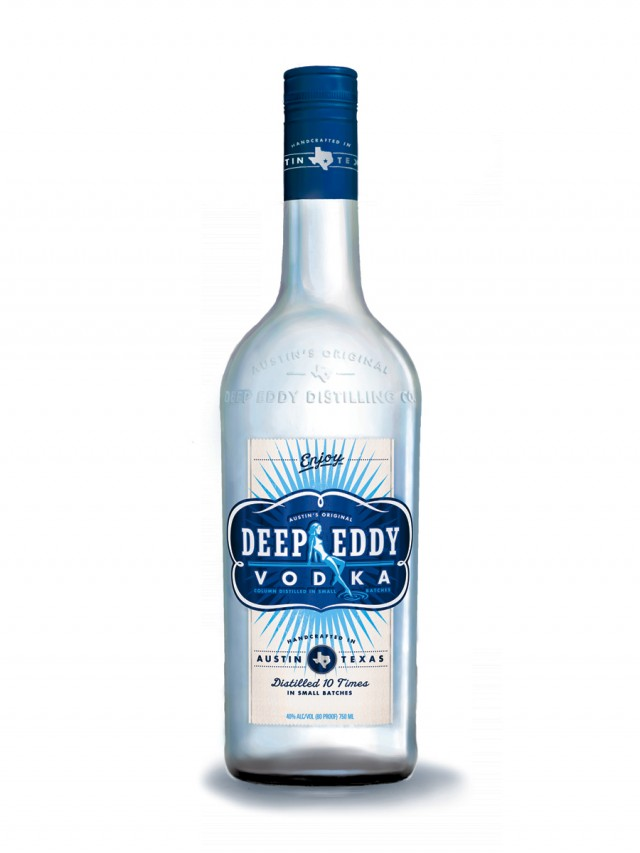
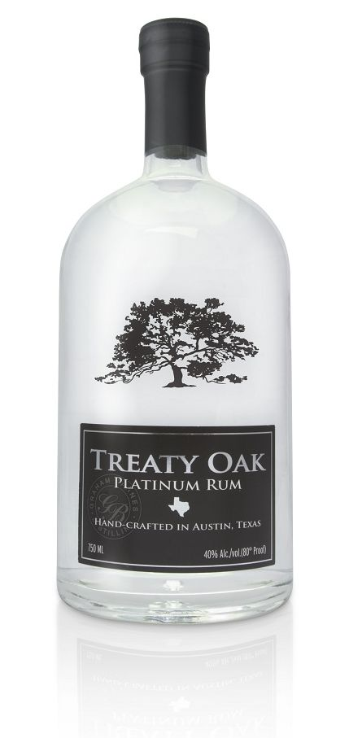

Vodka
Even though vodka was invented in Europe, Texas has embraced and enhanced this classic spirit.
- 


Drink in Austin is your guide to beer, wine, and spirits produced in the greater Austin, TX area. Here, you'll be able to discover what's made and where to find it.
Even though vodka was invented in Europe, Texas has embraced and enhanced this classic spirit.
Yo ho ho! Pirates love rum but not as much as Texans. If Black Beard would have had a chance to taste the rum that Austin has to offer, he might have considered a career change.
What's a drink selection without whiskey? Not much of a selection at all. Of course, Austin has put its own stamp on this staple.

Does Austin do wine? Well, with the Univeristy of Texas being the largest university campus in the country, it's obvious that Austin has plenty of class (rimshot). As corny as that joke was, it turns out that The Univeristy of Texas System is the largest wine producer in the state. They're not the only source of wine in the area, though.

All tequila is made in Mexico but it's not all bottled there. Austin offers some award-winning varieties that put the "art" in Mexican Martini.
Beer. What else needs to be said?

Texans are traditionally considered to be a bit rough around the edges. That doesn't mean we can't enjoy the softer side of spirits.